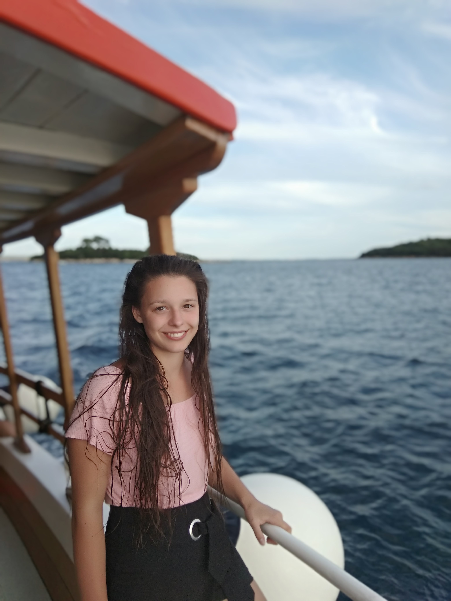

|  | Pákozdi Borbála vagyok, 19 éves jelenleg a BME Ipari termék- és formatervező mérnöki szakának első éves tanulója vagyok. Gyerekkorom óta érdekelnek a színek, formák, a tárgyak, plakátok, szövegek elrendezése, kialakítása, ezért is járok ide. Évek óta foglalkozok a néptánccal. Rendszeresen járok fellépésekre versenyekre és az utóbbi időben tánctanítással is elkezdtem foglalkozni. Weboldalam célja ezen két oldalam bemutatása folyamatos bővítés mellett. |
2000. július 13-án születtem Budapesten. Születésem óta Budakeszin élek. Ide is jártam a Széchényi István Általános Iskolába, majd a Prohászka Ottokár Katolikus Gimnáziumba. Jelenleg a Budapesti Műszaki és Gazdaságtudományi egyetem Ipari termék- és formatervező mérnök szakos hallgatója vagyok.